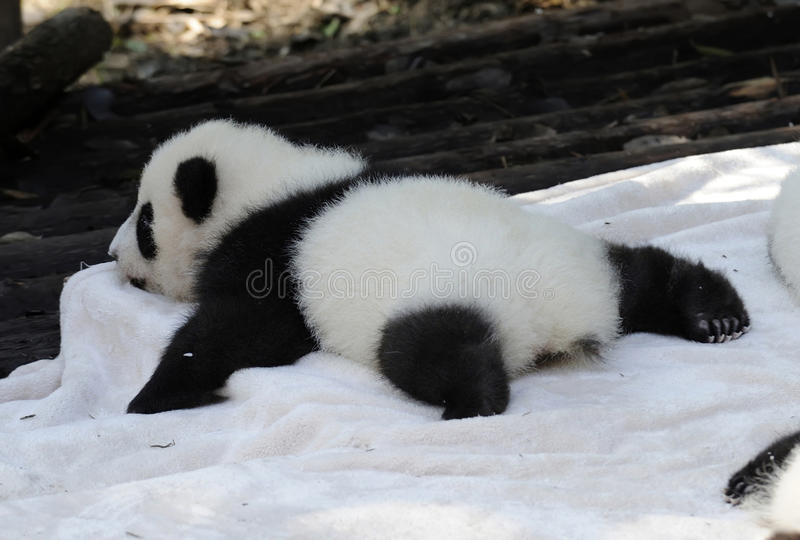
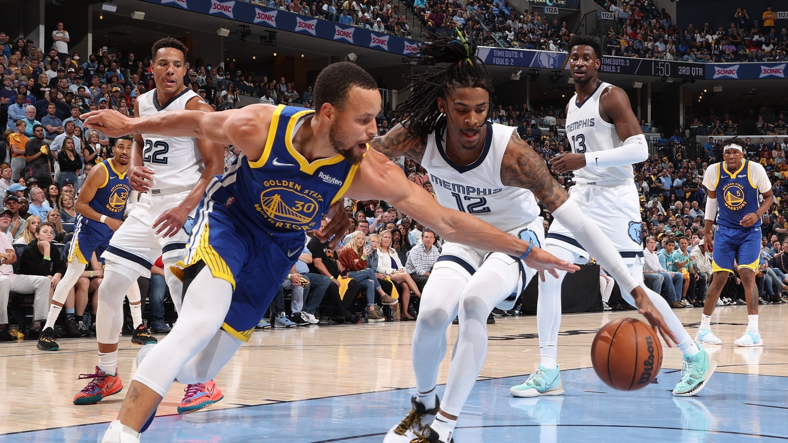

Anime Watched


ｦｧｶｼｻ ｳｪ
ｭｶｧｧﾀ
ｦｴｮｳｪ ｾｦｻｨｭｪｩ
ｫｦｽｶｹｮｻｪｺ
FOOD: 
ANIMAL: 
SPORT: 
COLOR: 


TV WATCHED

ｫｦｳｮｲﾀ
Here is my Family. My Mother is Jonalee De Chavez Banalan, and my Father is Hajie Dela Rosa Banalan. All of my siblings are Studied at Batangas State University the First one is BS Archi and me and my brother was BSIT and the for my two young sister is psychology and Instrumentation. I'm The third son of the family. The First dauther is Jenelle Banalan and the Second son is Jonald Banalan, and my two little sister is Jhee anne and Ma.Joy Banalan
ｳﾀ ｩｹｪｦｳ
Programming positions are plentiful. Unlike other career fields where demand can quickly dry up during bad economic times, programmers are always in high demand. As you gain proficiency and experience in programming, you will have a broader range of potential jobs. Programming can lead to new job opportunities at your current employer. Most businesses require programmers at some level, from writing code to automating certain processes to developing new products and solutions. Furthermore, programmers have far more telecommuting and flex-time options than other professions.